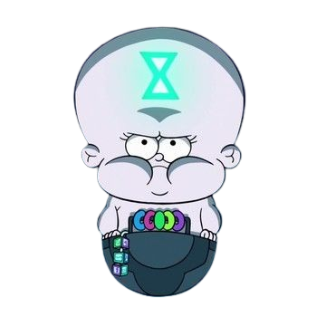
Entidade
O Bebê do Tempo
Time Baby
Um governante gigante do tempo que comanda a Polícia do Tempo e dispara lasers pelos olhos.
Episódio: A Invocação (S01E09) / O Jogo do Blendin (S02E08)
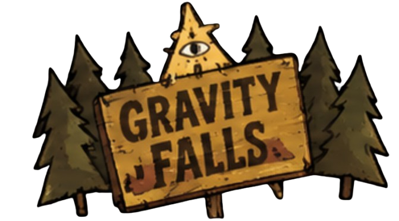
Gravity Falls · Arquivos sobrenaturais
Conheça as entidades, os demônios e as criaturas estranhas de Gravity Falls.

Time Baby
Um governante gigante do tempo que comanda a Polícia do Tempo e dispara lasers pelos olhos.
Episódio: A Invocação (S01E09) / O Jogo do Blendin (S02E08)
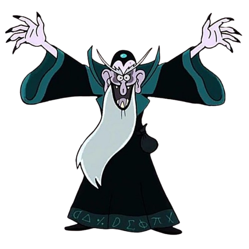
Um mago interdimensional da matemática que ganha vida e poder por meio dos dados de um jogo de RPG.
Episódio: Masmorras, Masmorras e Mais Masmorras (S02E13)
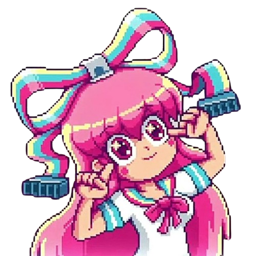
Uma entidade digital consciente de um jogo de namoro que consegue se locomover pela rede elétrica e possuir objetos eletrônicos.
Episódio:Soos e a Garota Real (S02E05)
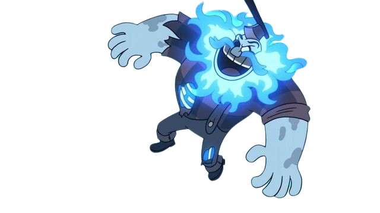
Archibald Corduroy
Um espírito poderoso que altera a realidade da mansão, provoca incêndios e transforma pessoas em madeira.
Episódio: O Mistério da Mansão Northwest (S02E10)
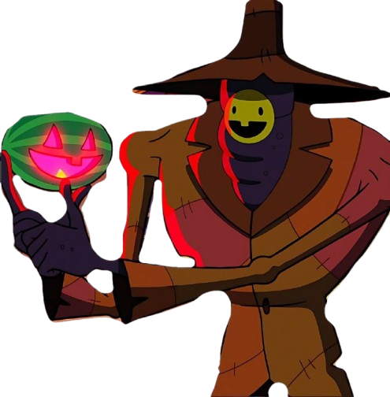
Summerween Trickster
Uma entidade mágica e assustadora composta por doces rejeitados que pune crianças sem espírito festivo.
Episódio: Summerween (S01E12)
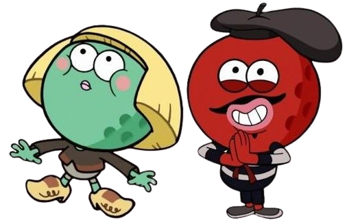
Os Seres do Golfe / Caddies de Minigolfe
As pequenas entidades/povos mágicos que vivem dentro de cada buraco de minigolfe e controlam as bolas para garantir as jogadas.
Episódio: A Guerra do Golfe (S02E03)
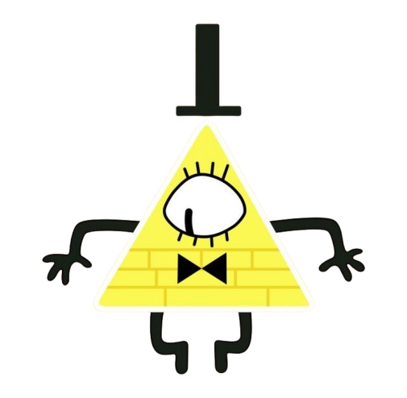
O demônio da mente
Um ser triangular caótico que invade sonhos, manipula mentes e tenta trazer o Estranhedon.
Episódio: Várias aparições; estreia em Aproveite a Viagem (S01E19)
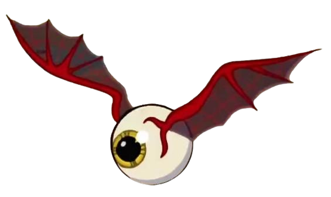
Eye-Bat
Um demônio voador com um enorme olho e asas de morcego, capaz de petrificar pessoas.
Episódio: Trilogia Estranhedon (S02E18–S02E20)
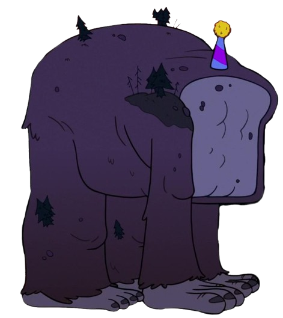
O Destruidor
O demônio colossal em formato de gorila de pedra/folhagem com chifres que espalha destruição por onde passa.
Episódio: Trilogia Estranhedon (S02E18–S02E20)
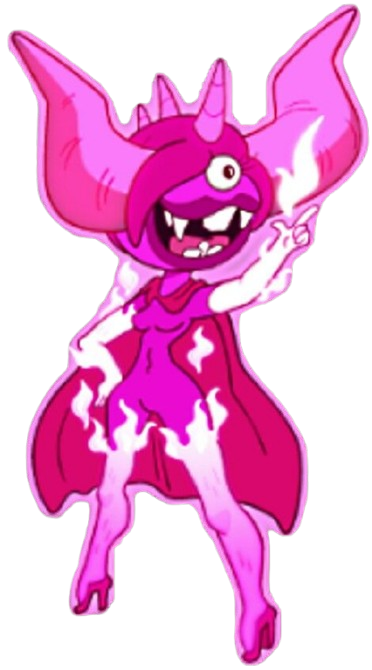
Uma demônia formada por fogo rosa-choque, integrante do grupo de Bill Cipher.
Episódio: Trilogia Estranhedon (S02E18–S02E20)
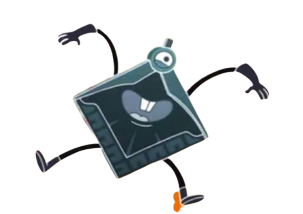
Um demônio geométrico verde com formato semelhante a uma bússola.
Episódio: Trilogia Estranhedon (S02E18–S02E20)
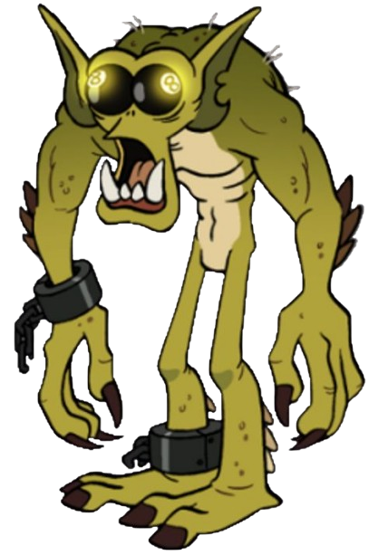
O demônio da bola oito
Um demônio gigante reconhecido pelas bolas de sinuca número oito no lugar dos olhos.
Episódio: Trilogia Estranhedon (S02E18–S02E20)
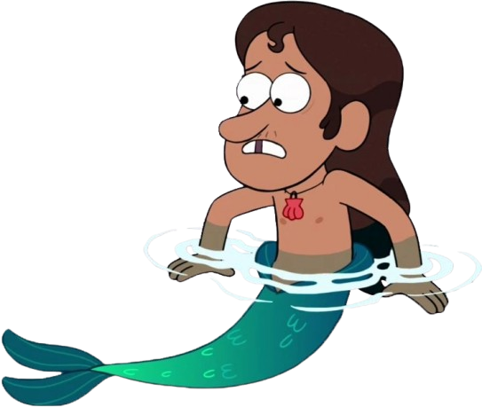
O sereio / tritão
Um tritão encontrado preso na piscina pública de Gravity Falls, longe do mar.
Episódio: A Piscina Pública (S01E15)
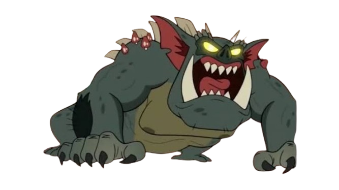
O monstro híbrido perigoso que projeta o maior pesadelo do alvo através do olhar.
Episódio: O Lado Ruim do Stan (S01E18).
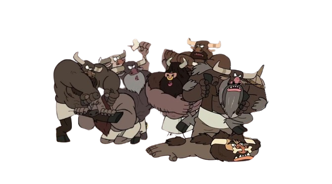
Manotaurs
As criaturas metade homem, metade touro obcecadas por virilidade e testes de masculinidade na floresta.
Episódio: Dipper Homem (S01E06).
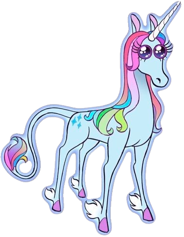
A unicórnio
Uma unicórnio vaidosa e falsa que vive na floresta mágica.
Episódio: A Sorte dos Pines (S02E15)
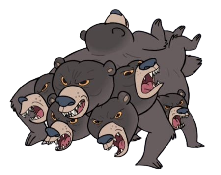
Multi-Bear
Um urso gigante de oito cabeças que gosta da música “Disco Girl”.
Episódio: Dipper Homem (S01E06)
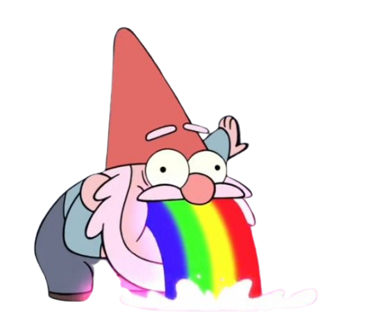
Habitantes da floresta
Homenzinhos de chapéu vermelho que vomitam arco-íris e tentaram se casar com Mabel.
Episódio: Armadilha para Turistas (S01E01)
Nenhuma criatura encontrada.